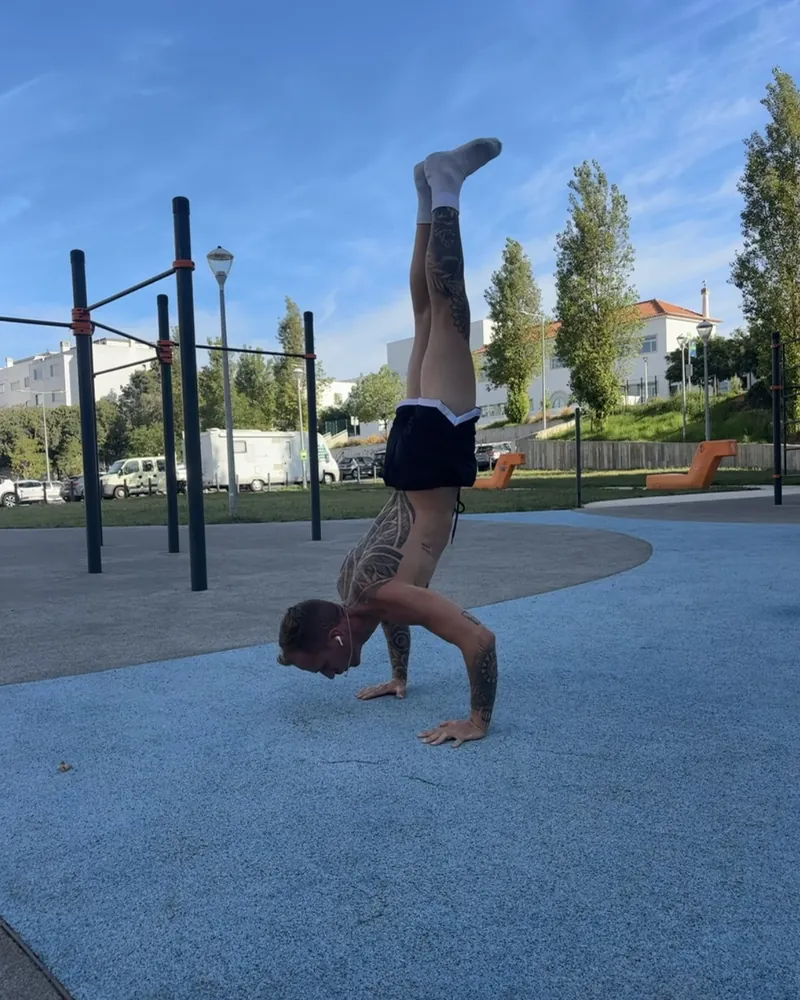

Handstand: como aprender, passo a passo
Por João Gonzalez, Técnico Especialista em Exercício Físico e Personal Trainer certificado. Atualizado a .
Aviso de saúde. Este guia é informação geral e não substitui uma avaliação médica nem de um profissional de saúde. Se sentires dor, para. Se tens tensão arterial alta, glaucoma ou outro problema nos olhos, ou lesões nos ombros, nos punhos ou no pescoço, fala primeiro com o teu médico, porque ficar de cabeça para baixo pode não ser indicado.
Para aprender o handstand (pino), prepara primeiro os punhos e os ombros, passa pelo handstand na parede de costas e depois de frente para a parede, treina os toques fora da parede e só então o kick-up para o handstand livre. Resulta melhor com prática curta e frequente, 10 a 15 minutos, 3 a 6 vezes por semana, do que com treinos longos até à exaustão. O tempo que leva varia muito de pessoa para pessoa.

Antes de começar
Estes pontos dizem se o corpo está pronto para ficar de cabeça para baixo com segurança:
- Levantas os braços até junto às orelhas sem arquear a zona lombar.
- Dobras os punhos para trás cerca de 80 a 90 graus sem dor.
- Aguentas uma prancha de 60 segundos.
- Fazes 3 séries de 8 pike push-ups.
As 7 etapas do handstand
Cada etapa tem um alvo. Só avanças quando o cumpres com técnica limpa.
Punhos e pike hold
Aquece os punhos e faz o pike hold: mãos no chão, anca por cima das mãos e braços junto às orelhas.
Alvo: 3 séries de 30 s. Avanças quando não há dor e os ombros ficam abertos.
Handstand na parede, de costas
Entra com um kick-up, de costas para a parede, e aprende a sair em roda para os dois lados.
Alvo: 5 séries de 20 s. Avanças quando sais em segurança para os dois lados.
Handstand de frente para a parede
Sobe com a barriga virada para a parede, com as mãos a 10 a 20 cm dela.
Alvo: 5 séries de 30 s. Avanças quando o corpo fica em linha, sem banana.
Toques fora da parede
De frente para a parede, tira um pé e depois os dois, e aguenta uns segundos sem apoio.
Alvo: 5 séries de 5 tentativas de 3 a 5 s. Avanças quando seguras o equilíbrio com os dedos e as palmas.
Kick-up para handstand livre
Pratica a entrada perto da parede ou no chão livre.
Alvo: 10 a 15 min de prática, holds de 5 a 10 s. Avanças quando a entrada sai bem em pelo menos metade das tentativas.
Handstand livre
Aguenta em linha reta, longe da parede.
Alvo: holds de 15 a 30 s. Avanças quando corriges o equilíbrio só com as mãos.
Handstand livre consistente
Repete holds longos com qualidade.
Alvo: 3 séries de 30 a 60 s. Avanças quando estás pronto para o press, o HSPU ou o handstand a uma mão.
Erros comuns
- Corpo em banana. Arquear a zona lombar costuma ser sinal de ombros que ainda não abrem. Volta ao pike hold e à parede de frente.
- Não saber cair. Aprende a saída em roda antes do handstand livre. O medo de cair trava mais do que a falta de força.
- Mãos longe da parede. De frente para a parede, as mãos ficam a 10 a 20 cm. Mais longe, o corpo dobra.
- Saltar etapas. Cada etapa prepara a seguinte. Saltar uma costuma custar mais tempo do que fazê-la.
- Treinos longos e raros. O handstand é equilíbrio e técnica. Aprende-se com muitas entradas boas, não com séries até à exaustão.
- Equilibrar com o corpo todo. No handstand livre as correções vêm dos dedos e das palmas, com o corpo firme em linha.
- Esquecer os punhos. Aquece-os sempre. Dor que não passa é sinal para parar e pedir ajuda.
Quanto treinar
- 10 a 15 minutos, 3 a 6 vezes por semana. Prática curta e frequente rende mais do que um treino longo por semana.
- No início do treino, depois do aquecimento, com o corpo fresco.
- Para avançar, cumpre o alvo da etapa com técnica limpa em 2 treinos seguidos e sem dor.
- Volta uma etapa atrás se a técnica falha em mais de metade das séries, se há dor que não passa ou se ficas 3 semanas sem progredir. Revê também o sono, o stress e o volume de treino.
- Antes de cada tentativa, imagina a linha do corpo e a entrada. Uso este princípio em todas as skills.
Quanto tempo leva? Não há um prazo certo. As primeiras etapas costumam levar algumas semanas cada e as últimas podem levar meses. Depende do teu ponto de partida, da consistência e da recuperação.
Força para o handstand
Em paralelo, a força dos ombros ajuda. A ordem que uso é pike push-up, pike push-up com os pés elevados, negativos de HSPU na parede, HSPU parcial e, por fim, HSPU completo (3 séries de 5).
Quem escreve este guia
João Gonzalez é coach online de calistenia e ginásio e o criador do Gonzalez Coach (@ganzalez666). É Técnico Especialista em Exercício Físico e Personal Trainer certificado, treina no Algarve e faz handstand livre, full planche e full front lever. Treina desde os 14 anos e há 3 anos que se dedica às skills de calistenia. Acompanha pessoas online, em português e inglês, com planos personalizados e revisão dos vídeos de treino 3 vezes por semana.
Queres um plano de handstand feito para ti?
Analiso os teus vídeos, faço o plano a partir do teu ponto de partida e reviso os teus treinos 3 vezes por semana, por WhatsApp.